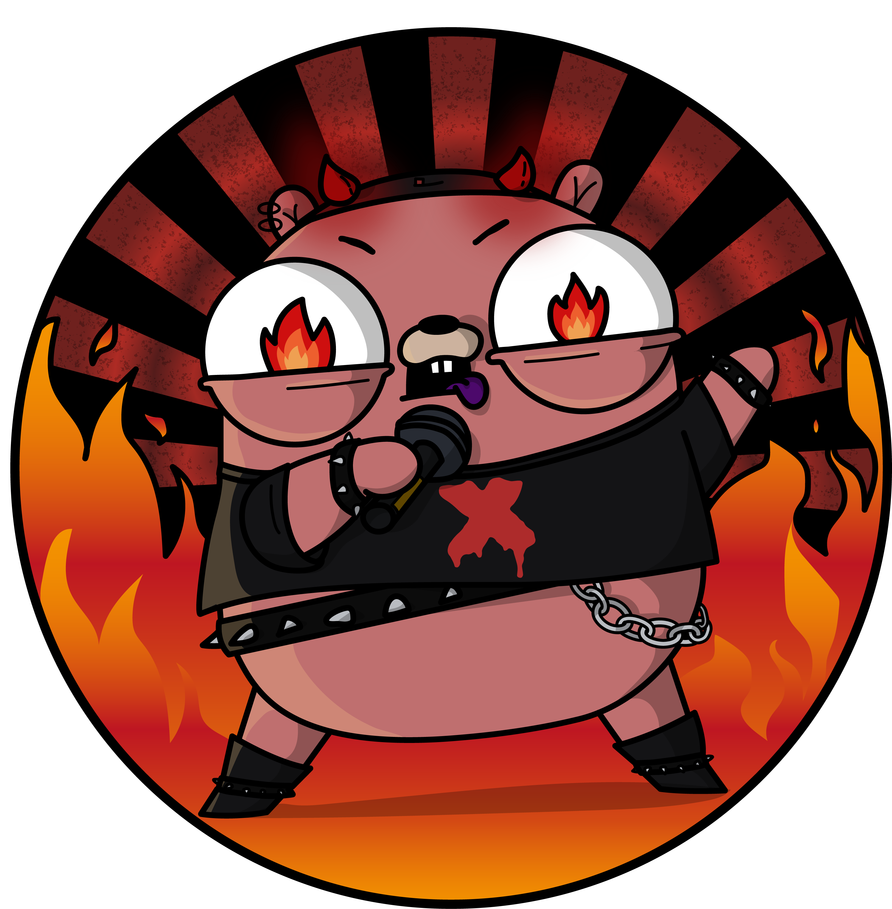
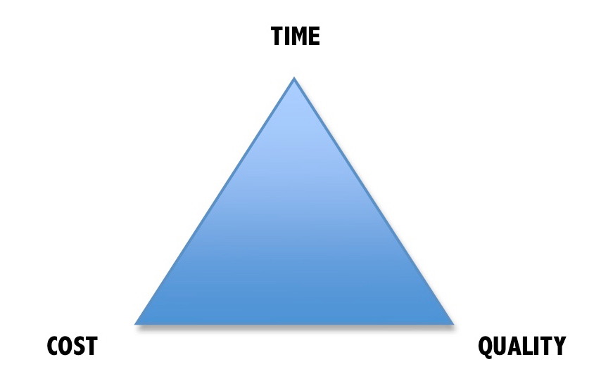
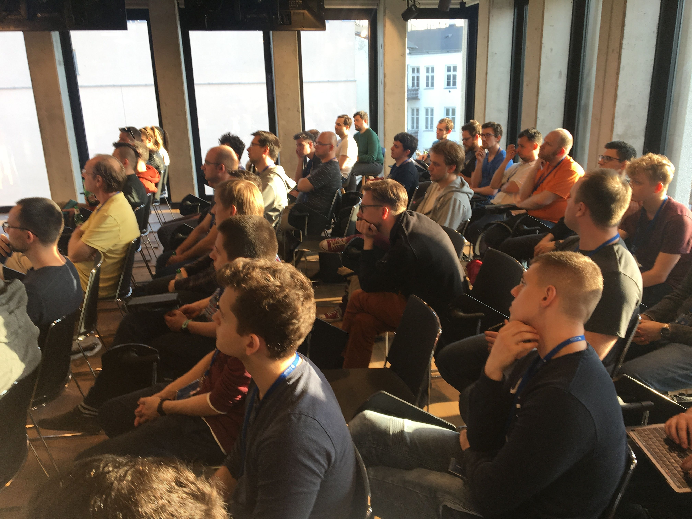
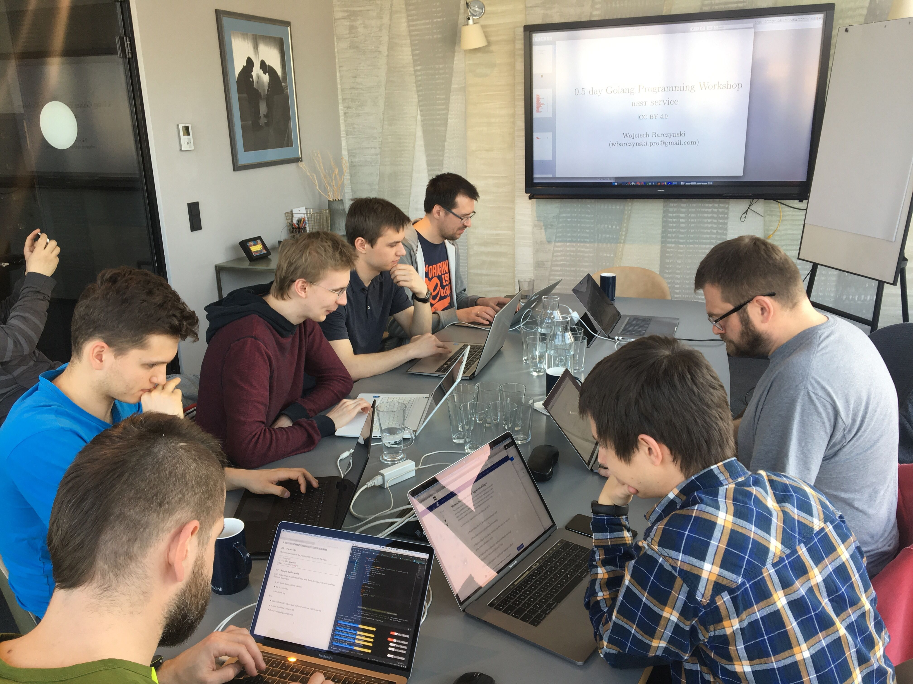
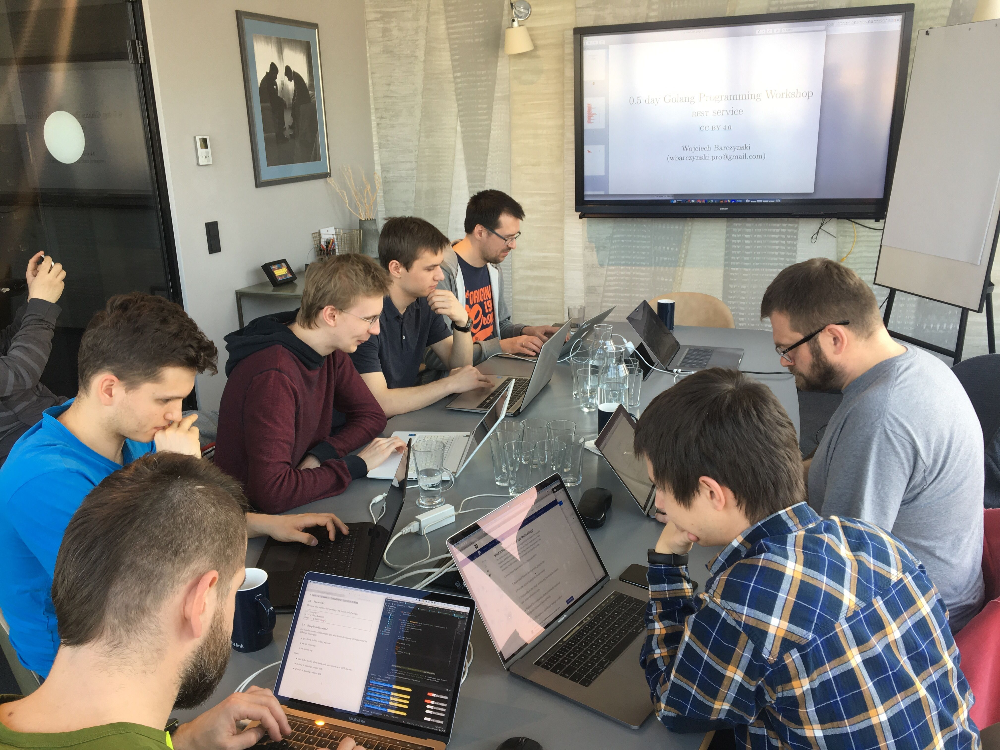

Beginnings
- from Berlin to Indonesia
- Successful mobile e-commerce
- Legacy developed
in death march 💀

Plan
- New features in Golang
- Move to Kubernetes (GCP)
- Get team on board
Next stop
SaaS and ML Fintech
Golang culture
- Ruby?
- Python?
- Docker?
- ...
- Golang

Culture shock
- No mocks?
- No DSLs
- No lib for X
- JSON parsing :)
- Not flexible

Golden mean
- Guidelines,
not rules
[Dave Cheney] - Hard to find
- It moves all the time
https://www.flickr.com/photos/bruno_brujah/
How to find it?
- Team
- Inclusion
- Diversity
https://www.flickr.com/photos/bruno_brujah/
Methods?
- Communication is everybody responsibility
- Team meetings
- One-on-ones
More inspiration: golang conduct
Assume good intentions
Always
Strong opinions
weekly hold
Idea?
- Demonstrate it
without negative effect on your work - Make it Real!
Problem?
- come with a recommendation for a solution
How to beat this?
i.e., Find the balance
Ship it
- Ship it
- ...
- The rest
- Finding balance
Kick Butt, Have Fun
Sun Microsystems
Photo by Nasa
Bottom up
- Early PR
- Over-communicate
- Top-down
Ship it
- Cut the scope
- Cut the quality
- Delegate sth to the floor
Stuck? Let us know
- Lower the threshold
- Time-boxing
- Trigger-based [1]
version 1 → version 2
- v1 = fast, ~MVP
- v2 = right
Deliver! Patch. Patch
version 1
- Understand
- Validate
- Avoid over-engineering
version 2
- Restructure
- Fix
- Re-factor
version 1 → version 2
- Will take more time
- Find answers faster
- Might give us more time
- Powerful language
- and tools (k8s, cloud)
- combined experience
https://www.flickr.com/photos/bruno_brujah/
Get know each other
- Talk with people around you
Questions?
- Can you tell me where you would go to figure out ____________?
- Do you know where there is an example that solves this same problem I could look at?
Questions?
- I have been struggling to figure out ______, could you point me in the direction of how you could solve it?
Thank you. Questions?
https://github.com/wojciech12
Doing good
- Jetbrains:
most promising - IEEE:
5th fastest growing - Kubernetes
- CloudNative
- Next enterprises?
Community
- Gopher Warsaw
- GoCracow
- Gopher Silesia
- Golang UG Gdańsk
Ideas
- Talks
- Workshops
- Speed get-know each other
- ...


